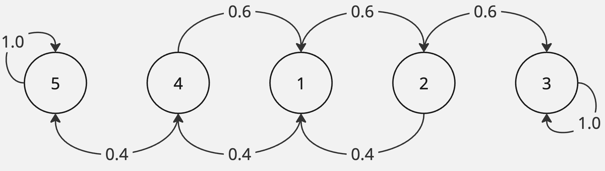
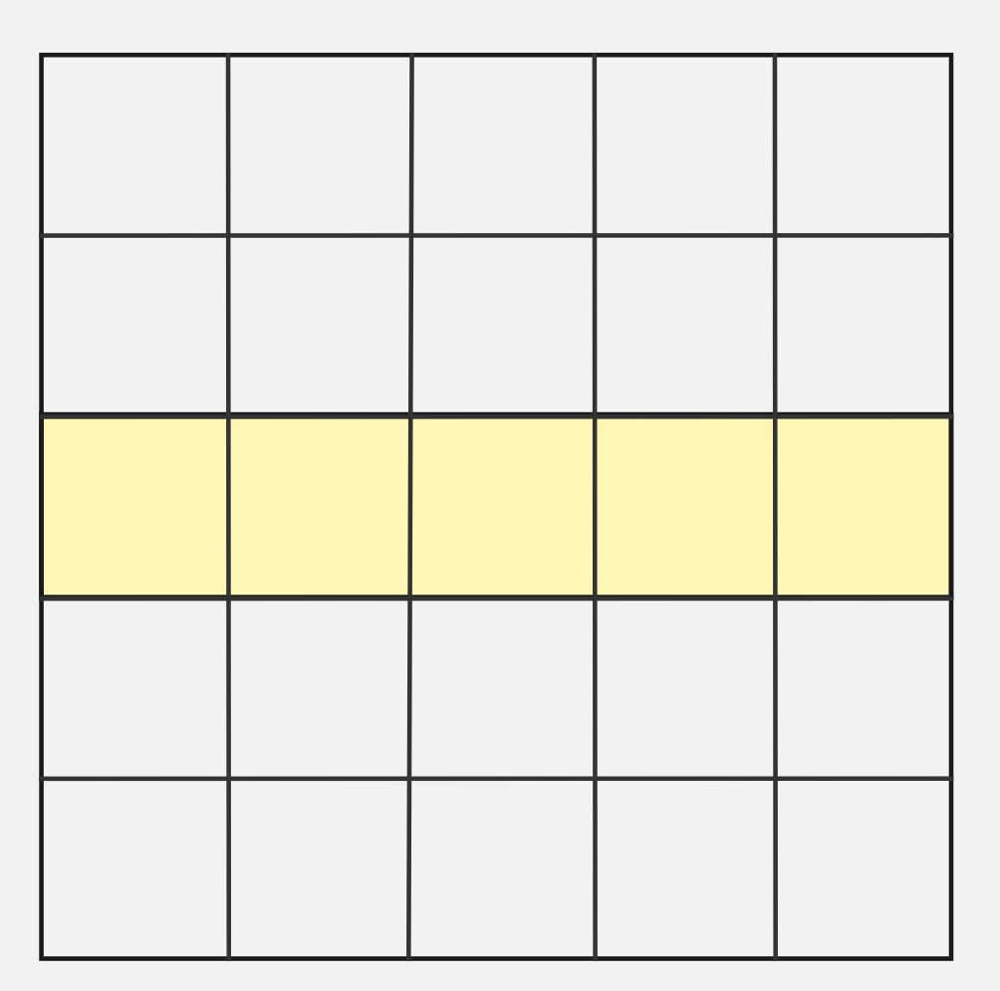
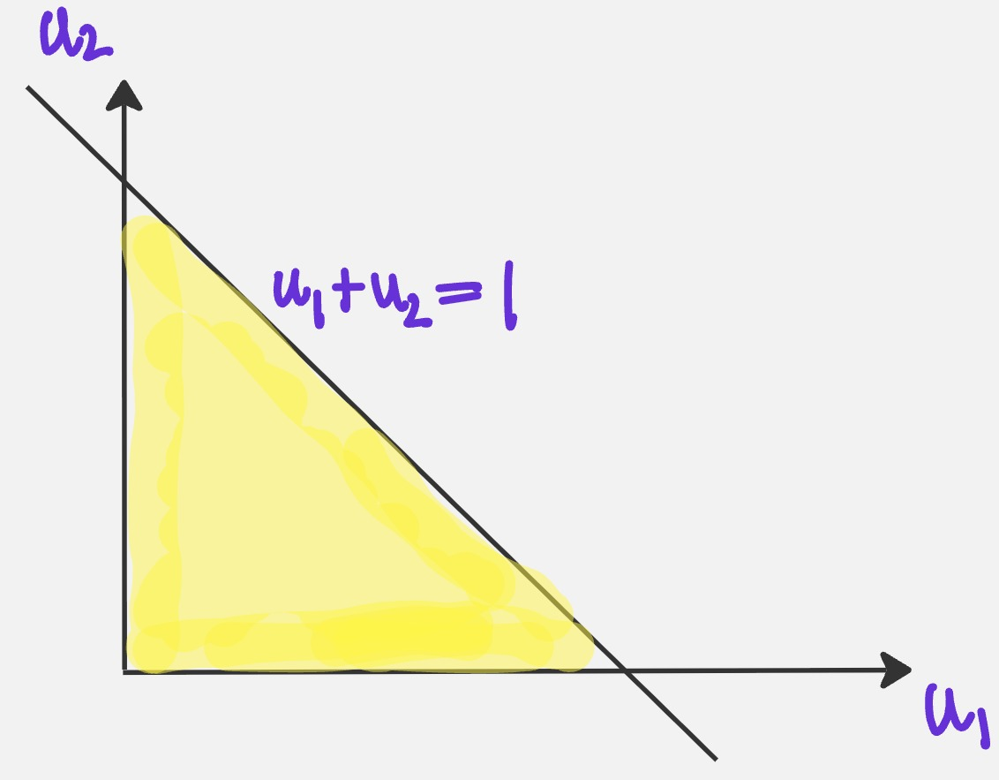

Puzzles on discrete probability
Example 1 We flip a fair coin until we obtain our first heads. If the first heads occurs on the \(k\)-th flip, we are given \(k\) balls. We put them into 3 bins labeled 1, 2, and 3 at random. Find the probability that none of the three bins are empty.
Solution.
Let \(A_k\) be the event that the first head occurs on the \(k\)th flip. So, we are interested in the sequence \(\underbrace{T \ldots T}_{(k-1)\text{-tails}}H\). We have:
\[ \mathbb{P}(A_k) = \left(\frac{1}{2}\right)^{k-1} \cdot \frac{1}{2} = \frac{1}{2^k} \]
Example 2 Imagine you have \(4\) \(6\)-sided dice. What is the probability that you roll a different number on each die?
Solution.
\[ p = \frac{6\cdot 5 \cdot 4 \cdot 3}{6^4} \]
Example 3 What is the probability of flipping exactly \(5\) heads when flipping \(10\) fair coins?
Solution.
\[ P(k = 5) = {10 \choose 5} \frac{1}{2^{10}} \]
Example 4 Two players are at deuce in a tennis match — player \(1\) has \(60\) percent of winning the point and player \(2\) has \(40\) percent chance. What are the odds of player 1 winning?
Solution
When a game is at the 40-40 mark, a player still needs two clear points to win the game. We can quickly draw the following state diagram to represent the game (it is a discrete-time markov chain).

Let the state \(s_1 \stackrel{def}{=}\) the two players are 40-40. And the state \(s_3 \stackrel{def}{=}\) player \(1\) wins. The states \(3\) and \(5\) are absorbing states. Let \(p_{13}\) be the hitting probability of state \(3\) from state \(1\). We have:
\[ \begin{align*} p_{13} &= 0.6 p_{23} + 0.4 p_{43}\\ p_{23} &= 0.6 (1) + 0.4p_{13}\\ p_{43} &= 0.6p_{13} + 0.4(0) \end{align*} \]
It turns out that \(p_{13} = \frac{9}{13}\).
Example 5 You have a plate of spaghetti in front of you (no sauce!). You pick two ends and tie them together. Then you pick two more ends and tie them together. Continue until there are no free ends left. If there were \(n\) spaghettis originally, what is the probability that you now have a single giant loop consisting of all the spaghettis?
Let \(p_n\) be the probability of a single giant loop. \(n\) spaghettis have \(2n\) free ends. In each of the \(n\) trials, you pick \(2\) ends. At the start, the probability that you don’t tie a sphagetti to itself is
\[ \frac{2n}{2n} \cdot \frac{2n - 2}{2n - 1} = \frac{2n - 2}{2n - 1} \]
After the first draw, we have reduced the problem to \((n-1)\) spaghetti strands and \(2n-2\) free ends. So, the probability of no-loops is:
\[ p_n = \frac{2n - 2}{2n - 1} \cdot p_{n-1} \]
Extending this to \(k=(n-1)\) trials: \[ \begin{align*} p_n &= \frac{2n - 2}{2n - 1} \cdot \frac{2n-4}{2n-3} \cdots \frac{2}{1}\\ &= 2^{n-1} \frac{(n-1)!}{(2n-1)(2n-3)\cdots 1}\\ &= 2^{n-1} \frac{2^n n! (n-1)!}{(2n)(2n-1)(2n-2)(2n-3) \cdots 1}\\ &= 2^{2n-1} \frac{n! (n-1)!}{(2n)!}\\ \end{align*} \]
Example 6 An electronic safe has a three digit passcode. You are given three constraints regarding the code. Firstly, the code is not an odd number. Secondly, the code does not contain the number six. Lastly, one of the digits appears more than once. How many possible three digit entries satisfy these three requirements?
Solution.
Since it’s a \(3\)-digit electronic passcode to a safe, \(0\) is a valid first digit. The last digit must be one of \(0,2,4,8\). The first digit must be one of \(\{0,1,2,\ldots,5,7,8,9\}\). The middle digit must be must be one of \(\{0,1,2,\ldots,5,7,8,9\}\)
Case I. The first two digits are identical.
There are \(9 \times 1 \times 4 = 36\) such distinguishable codes.
Case II. The last two digits are identical.
There are \(9 \times 1 \times 4 = 36\) such distinguishable codes.
Case III. The first and the third digits are identical.
There are \(1 \times 9 \times 4 = 36\) such distinguishable codes.
Also, \(000\), \(222\), \(444\) and \(888\) have been overcounted \(3\) times. They should be accounted for only once. Hence, the number of possible three digit entries satisfying the above requirements are \(108 - 8 = 100\).
Example 7 Suppose we roll \(5\) standard fair dice and sum the faces of the largest \(3\) values showing. Find the probability that the sum is \(18\).
Solution.
To reach a sum of \(18\) on the largest three die faces, we must get atleast \(3\) sixes in \(5\) dice rolls.
Define success as getting a \(6\) on a die, \(p = \frac{1}{6}\), \(q=\frac{5}{6}\) and let \(X\) be the number of sixes in \(5\) die rolls.
\[ \begin{align*} P(X \ge 3) &= 1 - (P(X=0) + P(X=1) + P(X=2))\\ &= 1 - \left(\frac{5}{6}\right)^5 - {5 \choose 1} \left(\frac{1}{6}\right)\left(\frac{5}{6}\right)^4 - {5 \choose 2} \left(\frac{1}{6}\right)^2\left(\frac{5}{6}\right)^3\\ &= \frac{23}{648} \end{align*} \]
Example 8 Consider a \(2023 \times 2023\) grid. The grid squares from the middle row are shaded in. What is the probability that a randomly selected rectangle contains at least one shaded square?
Solution.
Let’s solve this puzzle for a smaller \(5 \times 5\) grid. A rectangle is always determined by a choice of a pair of vertical grid lines and a pair of horizonal grid lines.

The number of horizontal and vertical grid lines are \(6\). So, the total number of rectangles are \({6 \choose 2} \times {6 \choose 2}\).
In order to pick rectangle that includes atleast one shaded square, one of the grid lines must chosen from the top \(3\) horizontal grid lines and the second grid line must be chosen from the bottom \(3\) horizontal grid lines. That yields \({3 \choose 1}^2\) pairs of horizontal grid lines. There are no restrictions on the vertical grid lines so there are \({6 \choose 2}\) pairs of vertical grid lines. Hence, the number of favorable rectangles are \(3^2 \times {6 \choose 2}\).
Generalizing, the desired probability for a \((2n-1) \times (2n-1)\) grid is:
\[ \begin{align*} p_{2n-1} &= \frac{n^2 \cdot {2n \choose 2}}{{2n \choose 2}^2} \\ &= \frac{n^2 }{{2n \choose 2}} \\ &= \frac{2n^2}{(2n)(2n-1)}\\ &= \frac{n}{2n-1} \end{align*} \]
So, \(p_{2023} = \frac{1012}{2023} \approx 0.5\).
Example 9 How many paths are there where you can only move up or right one unit at each step that go from \((0, 0)\) to \((5, 3)\) without crossing the line \(y = x\)? You are allowed to touch it.
We are interested in those paths where each vertice on the trajectory has \(x\) coordinate greater than or equal to the \(y\)- coordinate.
Example 10 How many paths are there where you can only move up or right one unit at each step that go from \((0, 0)\) to \((5, 3)\) without crossing the line \(y = x\)? You are allowed to touch it.
Example 11 Imagine 3 pairs of socks (6 total) labeled \(\{1,1,2,2,3,3\}\). Define a satisfactory pair as any pair of individual socks such that their numbers differ by a maximum of 1 (i.e. 2 3 is a satisfactory pair). In this game, drawing without replacement, what is the probability that a player will draw three satisfactory pairs of socks?
Solution.
Label the socks as
\[ \{a_1, a_2, b_1, b_2, c_1, c_2\} \]
Arrangements with \(3\) satisfactory pairs are only obtained, if there are no pairs where a 1-sock is paired with a 3-sock. Let us find the number of arrangements, where there is atleast \(1\) pair containing a 1-sock paired with a 3-sock.
The number of distinguishable arrangements where the first pair has a 1-sock paired with a 3-sock are given as follows. There are \(2\) possible choices for the 1-sock, \(2\) possible choices for the \(3\)-sock, \(2\) possible arrangements within this pair. For each such choice, there are \(4!\) choices for second and third pairs of socks. So, the result is \(2 \times 2 \times 2 \times 4! = 192\). By similar arguments, the number of arrangements with the second pair/third pair containing a 1-sock and 3-sock are \(192\) each. So, the total number of distinct arrangements are \(192 \times 3 = 576\).
However, we overcounted the arrangements that have two (\(1\)-sock,\(3\)-sock) pairs. The number of arrangements where the first and second pair are (\(1\)-sock,\(3\)-sock) pairs is \(2 \times 2 \times 2 \times 1 \times 2 = 16\). The three pairs can be arrangement amongst themselves in \(3! = 6\) ways. So, the total number of distinct arrangements are \(96\).
By inclusion-exclusion, the number of arrangments with atleast one (\(1\)-sock, \(3\)-sock) pair = \(576 - 96 = 480\). Thus, the number of satisfactory arrangments is \(720 - 480 = 240\).
The probability of \(3\) satisfactory pairs = \(\frac{240}{720}=\frac{1}{3}\)
Example 12 Player M has \(1\) dollar and player N has \(2\) dollars. Each game gives the winner $1 from the other. As a better player, M wins \(2/3\) of the games. They play until one of them is bankrupt. What Is the probability that M wins?
Solution.

Let \(p_{1W}\) be the hitting probability of state \(W\) given we are in state \(1\). We can quickly setup:
\[ \begin{align*} p_{1W} &= \frac{2}{3}p_{2W} + \frac{1}{3} \times 0 p_{2W} &= \frac{1}{3}p_{1W} + \frac{2}{3} \times 1 \end{align*} \]
So, we get:
\[ \begin{align*} p_{1W} &= \frac{2}{3}\left(\frac{1}{3}p_{1W} + \frac{2}{3}\right)\\ &= \frac{2}{9} p_{1W} + \frac{4}{9}\\ \frac{7}{9}p_{1W} &= \frac{4}{9}\\ p_{1W} &= \frac{4}{7} \end{align*} \]
Example 13 We throw \(3\) dice one by one. What is the probability that we obtain 3 points in strictly increasing order?
Solution.
We can choose a sub-population of \(3\) numbers without ordering from a population of \(n=6\) in \({6 \choose 3}\) ways. For each selection, there is only one unique way to order them in strictly increasing order. Hence, the number of dice rolls where the points are in strictly increasing order are:
\[ \frac{{6 \choose 3}}{6^3} = \frac{20}{216} \]
Example 14 Five boys and five girls are seated in a row at the movie theater. To ensure that the children are engaged during the movie, the teacher mandates that no two children of the same gender can sit next to each other. How many arrangements are possible?
Solution.
We label the set of boys and girls as
\[ \{B_1, B_2, B_3, B_4, B_5, G_1, G_2, G_3, G_4, G_5 \} \]
There are \(5 \times 4 \times 3 \times 2 \times = 5!\) ways to pick a girl for each boy. A boy and girl \((B_i, G_j)\) within a pair can be further be permuted. Additionally, the person in the first seat can be boy or a girl.
\[ p = \frac{5! 5! 2}{10!} \]
Example 15 A company is hosting a dinner for working mothers who have at least one son. Ms. Jackson, a mother with two children, has been invited to the event. What are the chances that both of her children are boys? In the second part, a new colleague, Ms. Parker, has two children. If you happen to see her walking with one of her children, and the child happens to be a boy, what is the probability that both of her children are boys?
Solution
The sample space \(\Omega = \{ GG, GB, BG, BB \}\). The probability that both children are boys given that atleast one is a boy is \(\frac{1}{3}\).
The probability that both children are boys given that a specific child is a boy is given by
\[ \begin{align*} \mathbb{P}(\text{Both are boys} | \text{Specific child is a boy}) &= P(\text{Both are boys}|\text{First is a boy}) \times P(\text{First is a boy}) + P(\text{Both are boys}|\text{Second is a boy}) \times P(\text{Second is a boy})\\ &= \frac{1}{2} \times \frac{1}{2} + \frac{1}{2} \times \frac{1}{2}\\ &= \frac{1}{2} \end{align*} \]
Example 16 You have been given a thousand coins to study. One of these coins has heads on both sides, while the remaining 999 are fair coins. You pick a coin at random and flip it ten times. To your surprise, the coin turns up heads every time. What is the likelihood that the coin you picked is the one with two heads?
Solution.
By Bayes,
\[ \begin{align*} P(\text{Double head coin}|\text{10 heads}) &= \frac{P(\text{10 heads} \cap \text{Double head coin})}{P(\text{10 heads})}\\ &= \frac{\frac{1}{1000}}{P(\text{10 heads} | \text{Double head coin}) P(\text{Double head coin}) + P(\text{10 heads} | \text{Fair coin}) P(\text{Fair coin})} \\ &= \frac{\frac{1}{1000}\cdot 1}{\frac{1}{1000} \cdot 1 + \frac{1}{2^{10}} \cdot \frac{999}{1000} }\\ \approx 0.5061 \end{align*} \]
Example 17 You have ten coins. \(9\) of them are fair coins and \(1\) of them is a coin with two heads. You pick a random coin from the set of coins and flip it five times. All five flips happen to be heads. Given this, what is the probability that the next flip will also be heads?
Solution.
Let \(D\) be the event that a double coin is picked and \(F\) be the event that a fair coin was picked. Let \(E\) be the event that the next flip is heads. Let \(S\) be the event that we get a sequence of \(5\)-heads.
By Bayes:
\[ \begin{align*} P(E|S) &= \frac{P(SE)}{P(S)}\\ &= \frac{P(SE|F) P(F) + P(SE|D) P(D)}{P(S|F)P(F) + P(S|D) P(D)}\\ &= \frac{\frac{1}{2^6} \cdot \frac{9}{10} + 1\cdot \frac{1}{10}}{\frac{1}{2^5}\frac{9}{10} + 1 \cdot \frac{1}{10}}\\ &= \frac{73}{82} \approx 0.890243 \end{align*} \]
Example 18 You are given n random variables, \(X_1, X_2 \ldots, X_N\). Each of these variables has a uniform distribution that ranges from \(0\) to \(1\). Your task is to determine the probability that the sum of these variables, denoted as \(S\), is less than equal to \(1\). Can you solve this problem?
Solution.
For \(N=2\), \(\mathbb{P}[X_1 + X_2 \leq 1]\) can be visualized as follows:

The two uniform random variables can be plotted along two orthogonal axes. Since \(X_1 \geq 0\), \(X_2 \geq 0\) and \(X_1 + X_2 \leq 1\), we are interested in the area of the yellow shaded portion. This should be \(\frac{1}{2}\).
Similarly, for \(N=3\) random variables, we will be interested in the volume of the tetrahedron, having vertices \((1,0,0)\), \((0,1,0)\), \((0,0,1)\) and \((0,0,0)\) which equals \(\frac{1}{2\cdot 3}\).
In general, we posit that the probability that the sum of \(N\) uniforms is less than unity is \(\frac{1}{N!}\).
More rigorously, the MGF of a uniform random variable is: \[ \begin{align*} P(X_1 + X_2 \leq t) &= \int_0^t P(X_2 \leq t - x_1 | X_1 = x_1 ) f_{X_1}(x_1) dx_1 \\ &= \int_0^t \int_0^{t-x_1} dx_2 dx_1 \\ &= \int_0^t (t-x_1) dx_1\\ &= \left[\frac{(t-x_1)^2}{2}\right]_0^t \\ &= \frac{t^2}{2} \end{align*} \]
Assume that \(P(X_1 + \ldots + X_k \leq t) = \frac{t^k}{k!}\). We are interested to show that \(P(X_1+ \ldots + X_{k} + X_{k+1} \leq t) = \frac{t^{k+1}}{(k+1)!}\).
Define \(S_k \stackrel{def}{=} \sum_{i=1}^{k} X_k\). We have:
\[ \begin{align*} P(S_k + X_{k+1} \leq t) &= \int_0^t P(S_k \leq t - x_{k+1} | X_{k+1} = x_{k+1}) f_{X_{k+1}}(x_{k+1}) dx_{k+1}\\ &= \int_0^t \frac{(t - x_{k+1})^k}{k!} dx_{k+1}\\ &= \left[\frac{(t-x_{k+1})^{k+1}}{(k+1)k!}\right]_0^t\\ &= \frac{t^{k+1}}{(k+1)!} \end{align*} \]
Example 19 Person A has a \(20\)-sided dice and person B has three \(6\)-sided dice. They both roll their dice and whoever gets a bigger number/sum of numbers wins the game. Is it a fair game? Now, what if there is one more player \(C\) who has a \(20\)-sided dice. Is this new game fair? (all dice are fair; a \(20\)-sided dice has number \(1,2,\ldots,20\) on each of its \(20\) sides)
Solution
The game between is \(A\) and \(B\) is not fair.
Define \(X_1\) as the face value on the \(20\)-sided die rolled by person A.
Define \(Y_1, Y_2, Y_3\) as the face values on the three \(6\)-sided die rolled by person B.
Define \(S_1 \stackrel{def}{=} X_1\), \(S_2 \stackrel{def}{=} Y_1 + Y_2 + Y_3\).
It’s a fair game, if the expected cost of playing a game equals the expected winnings. The expected cost for \(A\) is expectetaion of \(B\) winnings.
\[ \mathbb{E}[S_1] - \mathbb{E}[S_2] = 10.5 - 3 \times 3.5 = 0 \]
Example 20 I keep rolling a die until a \(6\) appears. What is the probability the sum of all rolls is even?
Solution.

We have:
\[ \begin{align*} p_{13} &= \frac{1}{6} \cdot 1 + \frac{1}{3} \cdot p_{13} + \frac{1}{2} \cdot p_{23}\\ p_{23} &= \frac{1}{2} \cdot p_{13} + \frac{1}{3} \cdot p_{23} + \frac{1}{6} \cdot 0 \end{align*} \]
So, \(\frac{2}{3}p_{23} = \frac{1}{2}p_{13}\) which implies \(p_{23} = \frac{3}{4}p_{13}\). Substituting in the first equation, we have:
\[ \begin{align*} \frac{2}{3}p_{13} &= \frac{1}{6} + \frac{1}{2} \cdot \frac{3}{4} p_{13} \\ \frac{7}{24} p_{13} &= \frac{1}{6}\\ p_{13} &= \frac{4}{7} \end{align*} \]
Example 21 You have two dice, how do you simulate one seventh odds with the two dice? Same way as one third odds with coins.
Solution.